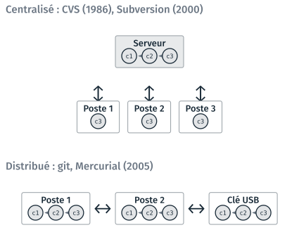
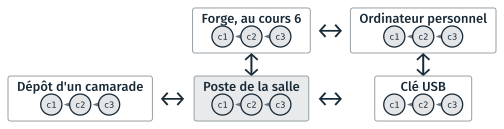
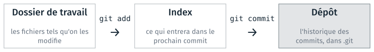
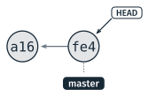

Git et le dépôt local#
Cette partie présente git, un logiciel qui enregistre les versions
successives d’un projet, et sa place parmi les systèmes de version. Elle
décrit ensuite la commande git et ses sous-commandes, puis celles qui
créent un dépôt, enregistrent une version, comparent et annulent une
modification, et ignorent des fichiers. Les exemples sont ceux du TD
2d, qui versionne la recette du TD 2c ; il
est présenté en fin de page.
À quoi sert git#
Sans outil, on garde les versions d’un travail en copiant le fichier sous un autre nom :
recette.md
recette_v2.md
recette_v2_corrigee.md
recette_finale.md
recette_finale_OK.md
Rien n’indique ce qui distingue deux copies, ni laquelle est la bonne.
Gestion de versions
Enregistrement des états successifs des fichiers d’un projet, chacun avec son auteur, sa date et une description, pour les relire, les comparer et y revenir.
Git est un logiciel de gestion de versions. Le dossier ne garde qu’un
recette.md, et git garde la liste de ses versions :
$ git log --oneline
28cbb91 Ignore les fichiers produits par pandoc
fe4fe8b Réduit les œufs à trois
a16d497 Ajoute la recette des crêpes
Chaque ligne est un commit : une version enregistrée, avec son identifiant et un message qui décrit ce qui a changé.
Git sert dès qu’un projet est fait de fichiers texte qui évoluent : du code, sa documentation, ses réglages.
Seul, il permet de revenir à la version qui fonctionnait, et de voir ce qui a changé depuis.
À plusieurs, chacun travaille dans sa copie, et les modifications se fusionnent (cours 6).
Pour un rendu, l’historique montre comment le travail a avancé.
Les systèmes de version#
Les systèmes de version se rangent en deux familles.

Un système centralisé et un système distribué.#
Centralisé : CVS, Subversion |
Distribué : git, Mercurial |
|
|---|---|---|
L’historique |
sur le serveur seulement |
dans chaque copie du projet |
Un poste contient |
la dernière version |
tous les commits |
Un commit |
demande le serveur |
se fait sans réseau |
Si le serveur est perdu |
l’historique n’est plus accessible |
chaque copie a tout l’historique |
Note
git a été écrit par Linus Torvalds en avril 2005, pour le noyau Linux. Le livre Pro Git (git-scm.com/book/fr) décrit ces deux familles dans son premier chapitre. Presque toutes les commandes de la séance s’exécutent sur le dépôt local, sans réseau.
Les copies d’un dépôt#
Une copie d’un dépôt git a tous ses commits. Deux copies échangent ensuite leurs nouveaux commits, sur un même poste, par une clé USB ou par un serveur.

Les copies d’un même dépôt, et les échanges entre elles.#
Commande |
Ce qu’elle fait |
|---|---|
|
crée une copie complète du dépôt dans un nouveau dossier |
|
récupère les nouveaux commits d’une autre copie, et les fusionne |
|
envoie ses nouveaux commits à une autre copie |
Comme le réseau de l’école n’est pas accessible depuis chez soi, les commits passent du poste de la salle à l’ordinateur personnel par une clé USB ou par la forge. La séance travaille sur une seule copie ; le cours 6 pratique ces échanges, et l’étape 7 du TD 2d fait une seconde copie pour ceux qui ont fini.
La commande git et ses sous-commandes#
git est un programme en ligne de commande. Le mot qui suit git est une
sous-commande, qui a ses propres options et ses propres arguments :
git <sous-commande> [options] <arguments>
La forme est celle des commandes du cours 1, avec un mot de plus.
Commande tapée |
Sous-commande |
Options |
Arguments |
|---|---|---|---|
|
|
||
|
|
|
|
|
|
|
|
|
|
|
L’aide existe à trois niveaux :
git --helpliste les sous-commandes courantes, par situation ;git add -haffiche dans le terminal les options deadd;git add --helpouvre la page complète du manuel, dans le navigateur sous Windows.
$ git add -h
usage : git add [<options>] [--] <chemin>...
-n, --[no-]dry-run simuler l'action
-v, --[no-]verbose mode verbeux
Sortie réduite à ses premières lignes, relevée avec git 2.43 en français.
Avertissement
Une commande du terminal tapée après git, comme git cd, n’est pas une
sous-commande : git affiche un message d’erreur. Une branche n’est pas non
plus un dossier : on ne s’y place pas par cd.
Créer un dépôt#
git init fait du dossier courant un dépôt : il y crée un dossier
caché, .git, qui contiendra l’historique. Le dossier courant se vérifie
avant, par pwd ou dans l’invite de Git Bash.
$ cd ~/Desktop/info01/cours2/2d_depot_recette/travail
$ pwd
/c/Users/eleve/Desktop/info01/cours2/2d_depot_recette/travail
$ git init
Dépôt Git vide initialisé dans …/2d_depot_recette/travail/.git/
$ ls -a
.
..
crepes.jpg
.git
recette.md
Les fichiers du dossier ne changent pas. Supprimer .git supprime
l’historique, et laisse les fichiers.
Avertissement
Un git init tapé dans le mauvais dossier transforme ce dossier en dépôt. Dans le
dossier personnel ~, il fait de tout le dossier personnel un dépôt. On
supprime alors le .git créé par erreur, dans ce dossier : rm -rf .git.
Chaque commit porte le nom et l’adresse de son auteur. Les postes de la
salle sont partagés : le réglage se fait dans le dépôt, sans --global.
git config user.name "Prénom Nom"
git config user.email "prenom.nom@ensg.eu"
Trois zones : dossier, index, dépôt#
Un fichier modifié passe par trois zones avant d’être enregistré.

Les trois zones, et les deux commandes qui font passer un fichier de l’une à l’autre.#
Le dossier de travail contient les fichiers tels qu’on les modifie.
L’index, ou zone de préparation (en anglais staging area), contient ce qui entrera dans le prochain commit. Les trois noms désignent la même chose.
Le dépôt, dans
.git, contient l’historique des commits.
git add place un fichier dans l’index ; git commit enregistre l’index
comme une nouvelle version. Un commit contient donc ce que git add a
placé dans l’index, et rien d’autre : deux modifications sans rapport font
deux commits.
git status affiche la zone de chaque fichier modifié, et les commandes
qui s’appliquent.
Ce qu’affiche |
Zone |
|---|---|
« Fichiers non suivis », « Modifications qui ne seront pas validées » |
dossier de travail |
« Modifications qui seront validées » |
index |
« rien à valider, la copie de travail est propre » |
tout est dans le dépôt |
À faire
Taper git status avant toute autre commande, et avant de demander de
l’aide.
Enregistrer une version : add, puis commit#
$ git add recette.md crepes.jpg
$ git commit -m "Ajoute la recette des crêpes"
[master (commit racine) a16d497] Ajoute la recette des crêpes
2 files changed, 24 insertions(+)
create mode 100644 crepes.jpg
create mode 100644 recette.md
a16d497 est le début de l’identifiant du commit, une empreinte de 40
caractères calculée à partir de son contenu (l’empreinte est présentée au
cours 5). Les sept premiers suffisent à désigner un commit dans un dépôt.
L’identifiant diffère sur chaque poste.
Chaque commit désigne son parent, le commit qui le précède. Après un second commit, l’historique forme une chaîne :

Les deux premiers commits du TD 2d. La flèche va de chaque commit vers son parent.#
$ git log --oneline
fe4fe8b Réduit les œufs à trois
a16d497 Ajoute la recette des crêpes
masterest le nom de la branche ; il désigne le dernier commit, et avance à chaque commit.HEADdésigne la branche courante.git logaffiche le plus récent en haut ; sans--oneline, il donne aussi l’identifiant complet, l’auteur et la date.qquitte l’affichage quand il ne tient pas dans le terminal.
Note
Sans -m, git commit ouvre l’éditeur vim dans le terminal, pour écrire
le message. Échap, puis :q! et Entrée, en sortent sans enregistrer.
Le message de commit#
Le message décrit ce que le commit change, en une ligne, avec un verbe au présent. Le verbe complète « Ce commit… » : ajoute, corrige, remplace, ignore.
Message |
Ce qu’on en apprend dans six mois |
|---|---|
|
rien |
|
rien, sans savoir lesquelles |
|
la quantité d’œufs a changé |
|
d’où vient le |
Un commit porte une seule modification, et un état qui fonctionne : on peut alors revenir à n’importe quel commit et obtenir un projet utilisable.
Ce qui a changé : git diff#
git diff montre les lignes modifiées depuis le dernier commit. Après le
passage des œufs de 4 à 3 :
$ git diff
diff --git a/recette.md b/recette.md
index aae4747..45bc5f0 100644
--- a/recette.md
+++ b/recette.md
@@ -9,7 +9,7 @@
| Ingrédient | Quantité |
|---|---|
| Farine | 250 g |
-| Œufs | 4 |
+| Œufs | 3 |
| Lait | 500 ml |
| Sel | 1 pincée |
| Beurre fondu | 50 g |
a/est la version du dernier commit,b/celle du disque.La ligne qui commence par
-est l’ancienne, celle qui commence par+la nouvelle. Une ligne modifiée compte pour une ligne retirée et une ligne ajoutée.Les autres lignes sont le contexte, trois de chaque côté.
@@ -9,7 +9,7 @@: le passage commence à la ligne 9, et fait 7 lignes avant comme après.
Dans Git Bash, les lignes - sont en rouge et les + en vert. VS Code
montre le même écart côte à côte, dans le panneau du contrôle de code
source (Ctrl + Maj + G).
Annuler une modification non validée : git restore#
git restore remet un fichier dans l’état du dernier commit.
$ git diff
@@ -21,4 +21,4 @@
5. Laisser reposer une heure.
-6. Cuire dans une poêle chaude, une minute par face.
+6. Cuire.
$ git restore recette.md
$ git status
Sur la branche master
rien à valider, la copie de travail est propre
Sortie de git diff réduite à la ligne @@ et aux lignes modifiées.
Avertissement
La modification annulée est perdue, et aucune commande ne la retrouve. git ne restaure que ce qui a été enregistré par un commit : une raison de faire des commits souvent.
Ignorer des fichiers : .gitignore#
Certains fichiers du dossier n’ont pas leur place dans le dépôt.
Ce qu’on ne versionne pas |
Pourquoi |
Motif |
|---|---|---|
les fichiers produits par une commande |
ils se refont depuis leur source |
|
les données de travail |
chaque version resterait dans l’historique ; le projet n’en garde qu’un petit jeu d’essai |
|
les mots de passe et les clés |
toute copie du dépôt les contiendrait (cours 5) |
|
Un fichier .gitignore, à la racine du dépôt, liste des motifs de
noms, un par ligne. git status n’affiche plus les fichiers qui y
correspondent, et git add ne les ajoute pas. Au TD 2d, pandoc a produit
recette.html et recette.odt :
$ git status
Sur la branche master
Fichiers non suivis:
(utilisez "git add <fichier>..." pour inclure dans ce qui sera validé)
recette.html
recette.odt
aucune modification ajoutée à la validation mais des fichiers non suivis sont présents (utilisez "git add" pour les suivre)
Le fichier .gitignore contient deux lignes :
*.html
*.odt
Après le commit du .gitignore, les deux fichiers sont toujours dans le
dossier, et absents de git status :
$ git status
Sur la branche master
rien à valider, la copie de travail est propre
Le * remplace n’importe quelle suite de caractères, comme dans Git Bash au
cours 1. Le .gitignore se versionne avec le projet, pour que la règle
vaille dans toutes les copies.
Note
Un fichier déjà suivi le reste, même s’il correspond à un motif :
git rm --cached <fichier> le retire du dépôt et le laisse sur le disque.
TD de la partie#
TD 2d — Un dépôt git pour la recette, 40 minutes. Les étapes 0 à 4 appliquent cette page : le dépôt et le premier commit, modifier, comparer et restaurer, ignorer les fichiers produits par pandoc. Les étapes 5 à 7 appliquent la page suivante.
Pour s’entraîner à git après la séance, des jeux et des exercices sont réunis dans S’entraîner : jeux et exercices, dont Learn Git Branching, en français.
Les TD des autres parties sont dans Travaux dirigés de la séance 2, version 2.